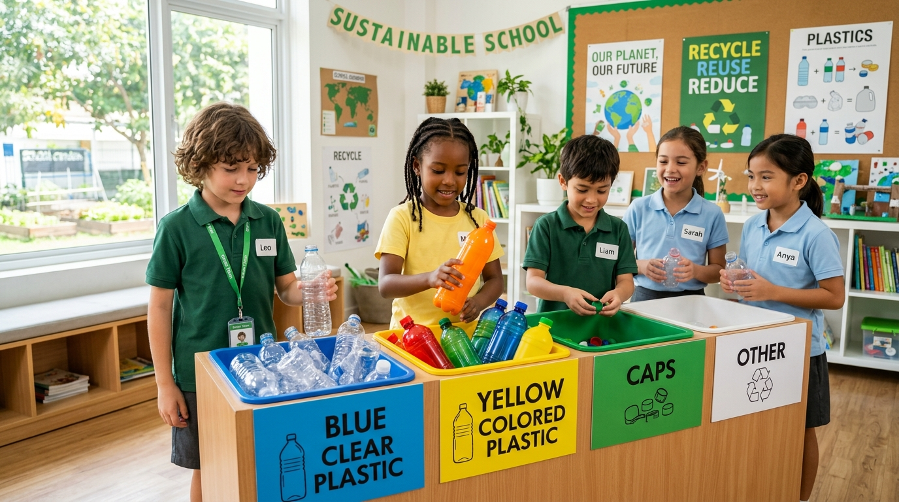
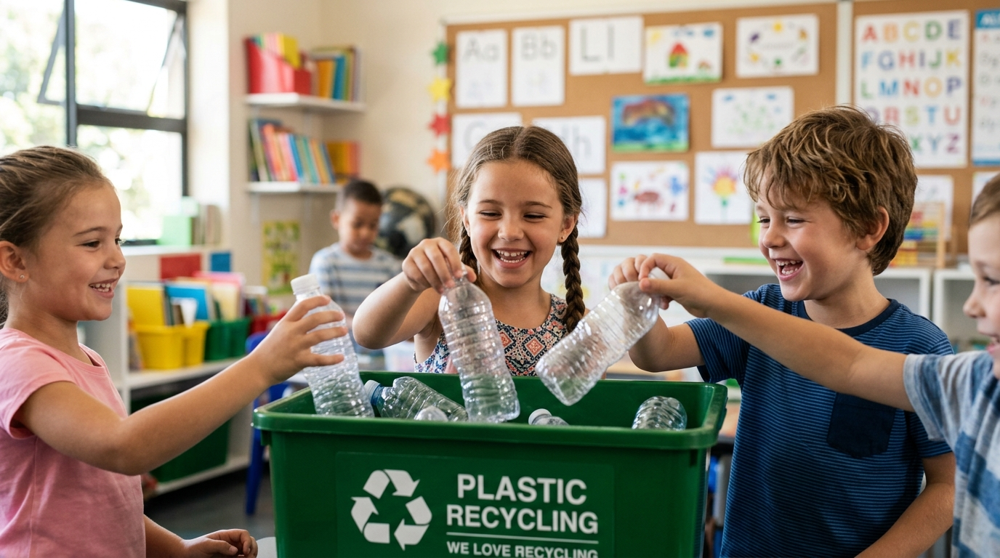
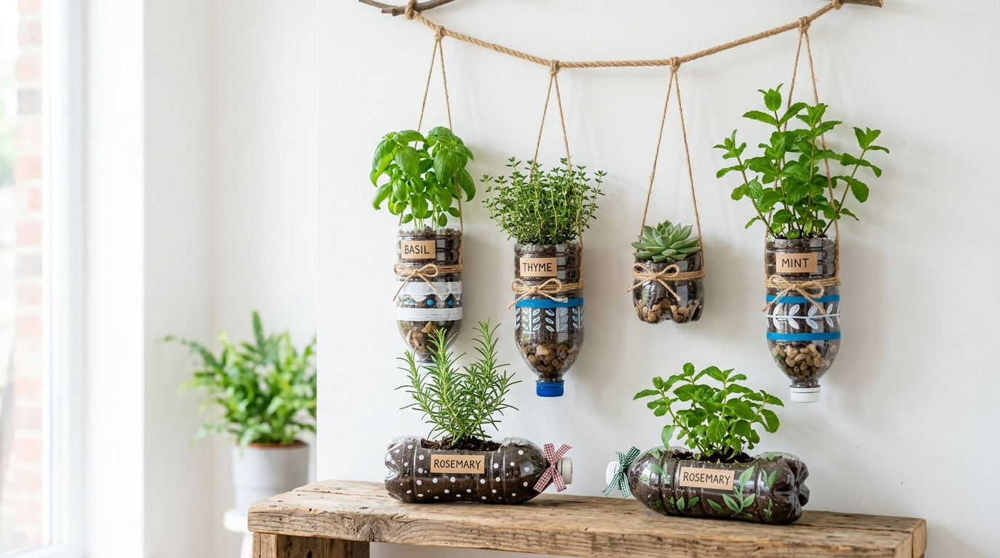

Reciclaje de Botellas PET: Una Campaña Escolar para el Medio Ambiente
Únete a nosotros en un viaje para crear una escuela más ecológica y responsable, transformando el reciclaje de botellas PET en una experiencia divertida y educativa para todos.
Leer publicación completa

1. ¿Por Qué Reciclar Botellas PET? Impacto Ambiental y Beneficios
El uso masivo de envases plásticos de tereftalato de polietileno (PET) genera toneladas de desperdicios en los planteles educativos. Implementar su reciclaje aporta grandes beneficios:
- Reducción de Residuos: Las botellas PET tardan cientos de años en descomponerse en los vertederos comunes, contaminando gravemente el suelo y los mantos acuíferos del subsuelo.
- Conservación de Recursos: Reciclar PET permite fundir y reutilizar la materia prima plástica, reduciendo drásticamente la necesidad de extraer y refinar nuevos hidrocarburos.
- Beneficios Económicos: La venta organizada de botellas PET trituradas o compactadas a centros de reciclaje autorizados genera ingresos adicionales para adquirir materiales y equipamiento para la propia escuela.

2. Dinámicas Divertidas para Reciclar en la Escuela: ¡Aprendizaje Activo!
Fomentar el reciclaje de forma lúdica asegura que los hábitos perduren. Sugerimos tres dinámicas básicas:
- Botellas a la Canasta: Un juego de destreza y precisión para clasificar botellas plásticas de agua y refresco por colores de envase antes de comprimirlas.
- Botellas de Arte: Proyectos multidisciplinarios de manualidades donde se utiliza el envase PET como base para crear maquetas o adornos.
- Debates Ecológicos: Dinámicas guiadas por los maestros para incentivar la reflexión estudiantil sobre las compras de empaques de un solo uso.
3. Creando Puntos de Recolección Eficientes: Guía Paso a Paso
Para establecer una infraestructura sólida de recolección escolar, siga estos sencillos lineamientos:
- Elige Ubicación: Ubique las estaciones de recolección en puntos estratégicos, altamente visibles y accesibles para toda la comunidad (como explanadas o cerca de la cooperativa escolar).
- Señalización Clara: Coloque señalética visual grande e instructivos sencillos que demuestren cómo aplastar y enjuagar las botellas antes de depositarlas.
- Mantenimiento Regular: Lógica de limpieza semanal y vaciado programado de contenedores para evitar malos olores por líquidos residuales o invasión de hormigas.

4. Transformando PET en Arte y Utilidad: Proyectos Creativos
Antes de desechar el plástico, podemos darle una segunda vida directamente en la institución:
- Macetas de Flores: Cortar y pintar las bases de las botellas para crear maceteros decorativos o huertos verticales en las rejas del plantel.
- Porta lápices: Botellas recortadas y decoradas por los alumnos para organizar sus útiles y colores en el escritorio.
- Juguetes Didácticos: Construcción de bolos, alcancías o vehículos a escala utilizando taparroscas y botellas, enseñando sobre física básica y creatividad sustentable.